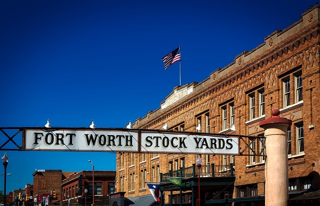

Fort Worth, Texas has a pretty cool history. First established in 1849 by the U.S. Army as a post during the Mexican-American War, it was first used to protect settlers who were moving further west. In 1853 the Army abandoned the fort but the settlement continued to grow and earned the nickname "Where the West Begins". As the cattle drive era began in earnest it remained a major hub along the Chisholm Trail, earning the moniker "Cowtown".
